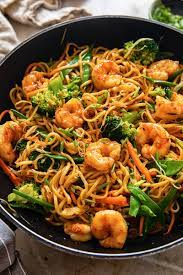

Easy Shrimp Chow Mein

This is a very quick and tasty shrimp chow mein recipe.
Ingredients
- 1 (8 ounce) package bean sprouts
- 1 (4 ounce) can sliced mushrooms, drained
- ⅓ cup cold water
- 2 tablespoons cornstarch
- 2 teaspoons soy sauce
- 1 teaspoon white sugar
Directions
- Bring a large pot of water to a boil. Add chow mein noodles and
cook over medium heat until cooked through but still firm to the
bite, 4 to 5 minutes. Drain and rinse with cold water.
- While noodles cook, heat oil in a large pot over medium heat. Add
onions and cook and stir until golden, 5 to 7 minutes. Add shrimp
and cook and stir until they are bright pink on the outside and the
meat is opaque, about 5 minutes. Add consomme, celery, and salt; cook,
covered, for 5 minutes. Add bean sprouts and mushrooms and bring to a simmer.
- Blend water, cornstarch, soy sauce, and sugar together in a small bowl. Add mixture
to the pot and simmer for 5 minutes. Serve over cooked chow mein noodles.